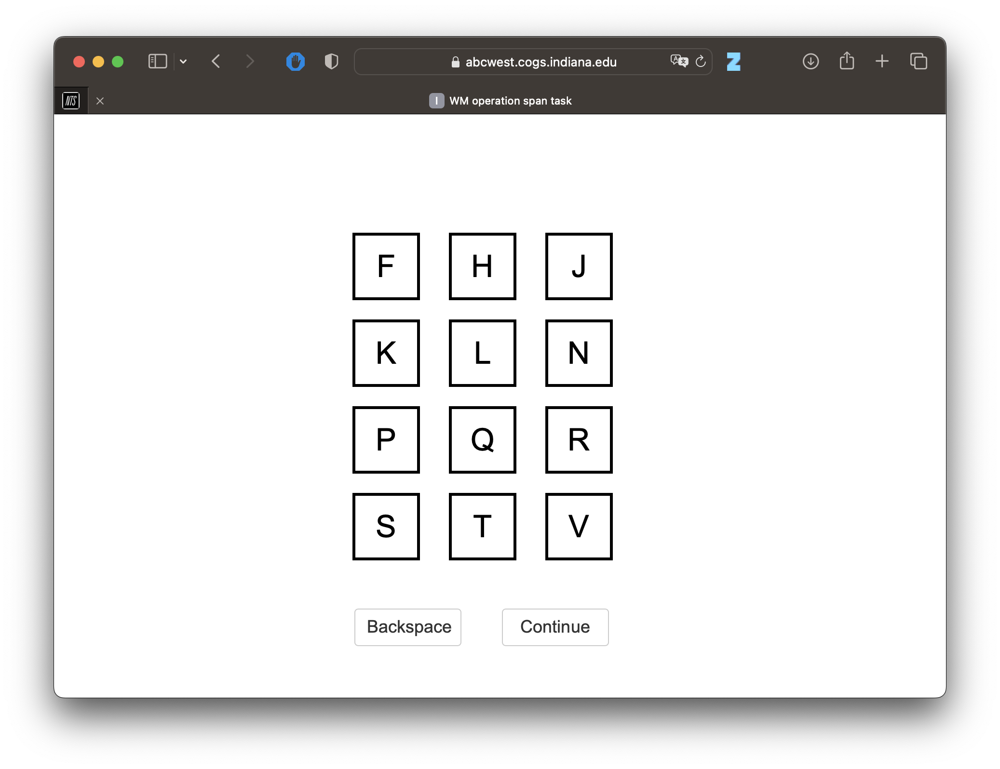
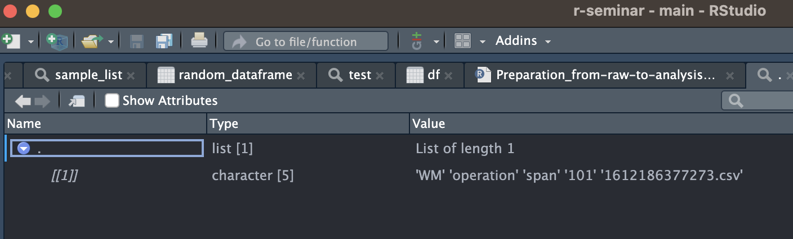

library(tidyverse)
dataset <- read.csv("dataset_srl_challenges_wrangled.csv")Apply & Multiple data sources
Seminar[5] <- Konkrete Anwendungsfälle: Limesurvey
Multiple Datenursprünge
Manchmal kommt es vor, dass wir nicht nur einen schönen, aufbereiteten Datensatz haben, sondern mehrere Dataframes, die wir irgendwie miteinander verknüpfen müssen. Oft geschehen Studien auch nicht nur in Limesurvey, sondern externe Tools bzw. Tests werden hinzugezogen, die dann wiederrum eigene Daten erzeugen. R bietet natürlich auch da vielfältige Möglichkeiten, damit umzugehen. Wir wollen das nun gemeinsam an einem Beispiel durchgehen
Working Memory Operation Span (OSPAN)
Mit dem OSPAN Test können wir die Arbeitsgedächtnisleistung von Proband:innen testen. Dazu gibt es ein Tool von Forscher:innen aus Indiana, welches über HTML & Javascript läuft und womit wir die Arbeitsgedächtnisleistung testen können. Der Test sieht wie folgt aus:

Er läuft im Browser, und nach Abschluss der Studie haben wir die Ergebnisse der einzelnen Proband:innen als einzelne .csv Dateien auf dem Server:

Kopiert also nun die aus Moodle heruntergeladenen 40 .csv Dateien in den Ordner assets/datasets/ospan/, wobei euer dataset_srl_challenges_wrangled.csv auf der obersten Ebene liegt (also auf der gleichen Ebene wie der Ordner assets).
Mit multiplen Daten umgehen
Wir beginnen also damit, uns einen Überblick über die einzelnen Dateien zu machen, welche sich unter assets/datasets/ospan/ befinden. Natürlich müssen wir diese Dateien nicht einzeln als Liste übertragen, sondern können uns diese ganz einfach auflisten mit list.files().
tests_list <- list.files("assets/datasets/ospan/")Wir sehen nun, wenn wir uns das erzeugte Objekt tests_list anschauen, dass dieses unsere 40 Tests enthält:
tests_list [1] "WM_operation_span_101_1612186377273.csv"
[2] "WM_operation_span_106_1612359256107.csv"
[3] "WM_operation_span_107_1612524224258.csv"
[4] "WM_operation_span_15_1610368013780.csv"
[5] "WM_operation_span_20_1610447300494.csv"
[6] "WM_operation_span_23_1610461666072.csv"
[7] "WM_operation_span_24_1610465426790.csv"
[8] "WM_operation_span_27_1610465354156.csv"
[9] "WM_operation_span_31_1610465797553.csv"
[10] "WM_operation_span_36_1610536583499.csv"
[11] "WM_operation_span_39_1610544645563.csv"
[12] "WM_operation_span_40_1610544829023.csv"
[13] "WM_operation_span_43_1610551510486.csv"
[14] "WM_operation_span_47_1610623434127.csv"
[15] "WM_operation_span_48_1610623346034.csv"
[16] "WM_operation_span_5_1610357167520.csv"
[17] "WM_operation_span_51_1610623724516.csv"
[18] "WM_operation_span_52_1610630827066.csv"
[19] "WM_operation_span_54_1610637379465.csv"
[20] "WM_operation_span_55_1610638115446.csv"
[21] "WM_operation_span_6_1610357158395.csv"
[22] "WM_operation_span_62_1610703127236.csv"
[23] "WM_operation_span_64_1610713861384.csv"
[24] "WM_operation_span_65_1610714043568.csv"
[25] "WM_operation_span_66_1610714141398.csv"
[26] "WM_operation_span_67_1610717257175.csv"
[27] "WM_operation_span_68_1610716883738.csv"
[28] "WM_operation_span_70_1610724891439.csv"
[29] "WM_operation_span_71_1610962127977.csv"
[30] "WM_operation_span_73_1610965288157.csv"
[31] "WM_operation_span_76_1611048167607.csv"
[32] "WM_operation_span_78_1611048577537.csv"
[33] "WM_operation_span_79_1611055497570.csv"
[34] "WM_operation_span_80_1611055678962.csv"
[35] "WM_operation_span_84_1611134539309.csv"
[36] "WM_operation_span_90_1611228773344.csv"
[37] "WM_operation_span_91_1611228344338.csv"
[38] "WM_operation_span_94_1611570780638.csv"
[39] "WM_operation_span_96_1611581289527.csv"
[40] "WM_operation_span_97_1611653179186.csv" Frage: Wie würden wir nun vorgehen? Wie können wir alle Dateien aus dieser Liste auf einmal importieren?
Sicherlich kommen der einen oder dem anderen Informatiker:in nun Schleifen in den Sinn, die wir vielleicht aus anderen Programmiersprachen kennengelernt haben. Dazu gehören etwa while oder for . Solche Schleifen spielen im normalen R-Gebrauch nicht so eine große Rolle, daher werden wir hier nicht auf die genaue Syntax eingehen. Hier nur kurz, um es zu zeigen:
for (test in tests_list){
print(test)
}Nun könnten wir natürlich auf die Idee kommen, über eine for Schleife alle Dateien aus der Liste einzulesen, und diese als einzelne Objekte in unserem Environment zu speichern:
for (test in tests_list){
test <- read.csv(paste0("assets/datasets/ospan/",test))
}Frage: Was passiert nun? Klappt der Code?
Zwar sieht der obige Code aus, als würde er theoretisch klappen, allerdings tut er das nicht. Es werden nicht dynamisch neue Objekte im Environment erzeugt, sondern lediglich eines, welches test heißt und immer wieder überschrieben wird.
Sind Loops eine gute Idee?
Generell bietet es sich beim Programmieren natürlich immer an, Loops zu verwenden. Doch bei R sieht das etwas anders aus. Loops führen dort zu schlechter lesbaren Code, zu Variablen, die im globalen Environment gespeichert werden und so weiter. Doch wie lautet die Lösung? apply!
Die apply Familie
Mit apply können wir Operationen auf eine Vielzahl von Objekten, Zeilen oder Spalten anwenden. Es gibt verschiedene apply Funktionen, abhängig davon, was wir am Ende zurückbekommen wollen. So gibt es:
apply: Vektor/Liste/Array als Outputlapply: Liste als Outputsapply: Vektor/Matrix als Output.. weitere (tapply, mapply etc.)
Schauen wir uns also ein konkretes Beispiel an. Nehmen wir an, wir haben das dataframe random_dataframe:
# Set seed for reproducibility
set.seed(123)
# Create a random dataframe with 10 rows and 4 columns
random_dataframe <- data.frame(
ID = seq(1, 10),
Age = sample(18:65, 10, replace = TRUE),
Score = runif(10, min = 0, max = 100)
)
random_dataframeNun wollen wir mean für jede Spalte haben. Expert:innen würde hier bereits eine dplyr Lösung mit summarise() und across() einfallen. Aber wir versuchen es mit Base-R und apply(), um das Konzept zu veranschaulichen. Die Syntax wird am Beispiel am deutlichsten:
apply(random_dataframe, 2, mean) ID Age Score
5.50000 42.00000 63.43222 Zuerst wählen wir das dataframe random_dataframe, dann ob wir spalten- oder zeilenweise vorgehen wollen (1 für zeilenweise, 2 für spaltenweise), und zuletzt übergeben wir die Funktion, die wir anwenden wollen. Super!
Kommen wir nun aber zurück zu unserem Working-Memory Datensatz und der Aufgabe, irgendwie die einzelnen Dateien zu importieren. Wie würden wir da vorgehen? Hier bietet sich lapply an, da es uns eine Liste gibt.
Listen erstellen mit lapply()
Wenn wir also nicht so leicht einzelne Objekte im Environment erzeugen können oder wollen, bietet es sich an, diese in einer Liste zu speichern. Da kommt lapply() sehr gelegen. Wir übergeben der Funktion eine Liste oder einen Vektor, und bekommen eine Liste der gleichen Länge zurück.
Repetition: Listen
Frage: Was waren nochmal Listen und wie unterscheiden sie sich von Vektoren?
Genau, in Listen können wir mehr Datentypen, sowie auch verschiedene Datentypen unterbringen. Während folgender Code zwar funktioniert (aber alle übergebenen Elemente in character umwandelt):
vec <- c("Das",1,"geht so",1.4,"aber nicht.")Würde folgender Code die Elemente in ihrem usprünglichen Datencode belassen:
sample_list <- list(1,"f",12,TRUE)
sample_list[4][[1]]
[1] TRUEDas Resultat sind unterschiedliche Datentypen:
print(paste0("vec is ", typeof(vec)," and sample_list is ",typeof(sample_list)))[1] "vec is character and sample_list is list"Was ist, wenn ich nun auf das zweite Objekt der Liste zugreifen will?
Über [] bekommen wir das Objekt an der Stelle, aber als Liste. Das Objekt selbst bekommen wir über [[]]. Beachte: Bei R fangen wir nicht bei 0, sondern bei 1 an zu zählen!
sample_list[[3]][1] 12Wie hilft uns das jetzt bei unserer Fragestellung? Schauen wir uns folgende zwei Beispiel-Dataframes erneut an:
random_dataframe1 <- data.frame(
ID = seq(1, 10),
Age = sample(18:65, 10, replace = TRUE),
Score = runif(10, min = 0, max = 100)
)
random_dataframe2 <- data.frame(
ID = seq(1, 10),
Age = sample(18:65, 10, replace = TRUE),
Score = runif(10, min = 0, max = 100)
)
list_of_dfs <- list(random_dataframe1,random_dataframe2)Wir können beide dataframes in einer Liste (list_of_dfs) zusammenfassen!
list_of_dfs[[1]]
ID Age Score
1 1 52 75.84595
2 2 25 21.64079
3 3 43 31.81810
4 4 24 23.16258
5 5 59 14.28000
6 6 26 41.45463
7 7 36 41.37243
8 8 53 36.88455
9 9 31 15.24447
10 10 34 13.88061
[[2]]
ID Age Score
1 1 58 37.446278
2 2 27 66.511519
3 3 40 9.484066
4 4 44 38.396964
5 5 24 27.438364
6 6 44 81.464004
7 7 49 44.851634
8 8 55 81.006435
9 9 42 81.238951
10 10 51 79.434232Das heißt, wir könnten mit lapply() die Liste aus Variablennamen nutzen, um diese zu importieren. Dabei hilft uns paste0, um den Pfad entsprechend anzupassen:
tests_list_with_path <- paste0("assets/datasets/ospan/",tests_list)
head(tests_list_with_path)[1] "assets/datasets/ospan/WM_operation_span_101_1612186377273.csv"
[2] "assets/datasets/ospan/WM_operation_span_106_1612359256107.csv"
[3] "assets/datasets/ospan/WM_operation_span_107_1612524224258.csv"
[4] "assets/datasets/ospan/WM_operation_span_15_1610368013780.csv"
[5] "assets/datasets/ospan/WM_operation_span_20_1610447300494.csv"
[6] "assets/datasets/ospan/WM_operation_span_23_1610461666072.csv" Und nun könnten wir eine Liste mit den eingelesenen Dataframes erstellen:
ospan_tests <- lapply(tests_list_with_path, read.csv)Wow! Das erspart uns eine Menge Arbeit.
Funktionen und lapply()
Wir haben soeben mit lapply und der read.csv() Funktionen alle 40 Dataframes des OSPAN Tests eingelesen und in der Liste ospan_tests gespeichert.
Was fällt bei einem Blick auf die einzelnen Dataframes auf?
Ein Blick auf die 40 einzelnen Dataframes zeigt, dass diese immer gleich aufgebaut sind. Bei jedem Dataframe sind eventuell noch weitere Bearbeitungsschritte notwendig, und uns fehlt auch noch eine Zuordnung über die Proband:innen IDs. Das von uns verwendete read.csv() ist eine built-in Funktion. Hier bietet sich also eine Funktion an, bei der wir selbst entscheiden können, was mit den jeweiligen Dataframes passiert. Das geht natürlich auch mit R! Doch wie genau funktionieren überhaupt Funktionen in R?
Funktionen sind in R nach folgendem Prinzip aufgebaut:
example_function <- function(value){
output <- do_something(value)
return(output)
}Wir definieren sie also normal wie auch Objekte in unserem Environment, definieren wie sie mit erhaltenen Objekten umgeht (value), und was sie damit machen soll (do_something()). Über return(output) können wir den output übergeben. Die Funktionsweise wird am besten mit Hilfe eines minimal-working examples deutlich:
custom_function <- function(object){
output <- object*55
return(output)
}
custom_function(10)[1] 550So weit so gut! Alles, was wir also in function() drinstehen haben, können wir also beliebig oft wiederholen.
Schauen wir uns also an, wie wir mit diesem neuen Wissen unser Problem weiter angehen können. Für eine komplette Lösung unseres Working-Memory Input Problems haben wir zwei (bzw. drei) Challenges:
Daten importieren
Zuordnung zu Proband:innen erreichen
Datentransformationen (i.e.,
wmc_PCUerstellen)
Eine Sache, die wir noch lernen müssen, hat mit der Zuordnung der Proband:innen und dem Dateinamen zu tun.
Wo könnte sich dieser verstecken und was kann dabei helfen?
Genau, unser WMC-Test Tool hat die Datei entsprechend mit dem Zuordnungscode abgespeichert, bspw. so: WM_operation_span_101_1612186377273.csv. Der Teil, der uns interessiert, ist 101.
Wie könnte man daran kommen?
Dabei kann uns str_split() aus stringr:: helfen (ist in tidyverse). Dessen Syntax sieht wie folgt aus:
str_split(c("split_this_string","split_this_string"),"_")[[1]][3]Wobei wir zuerst den String übergeben, und dann das Zeichen bzw. Muster, nach dem gesplittet werden soll. In unserem Fall ist es das _:
str_split("WM_operation_span_101_1612186377273.csv","_")[[1]]
[1] "WM" "operation" "span"
[4] "101" "1612186377273.csv"Leider übergibt str_split() eine Liste von Vektoren. Das kann manchmal verwirren, ist aber nicht weiter schlimm. Ein Blick auf das Datenobjekt kann immer helfen:

Über [[1]] müssen wir also zunächst auf das erste Objekt der Liste zugreifen.
str_split(tests_list[1],"_")[[1]][4][1] "101"Dann können wir direkt danach das vierte Objekt des darin enthaltenen Vektors auswählen, also so:
str_split("WM_operation_span_101_1612186377273.csv","_")[[1]][4][1] "101"Nun haben wir den Zuordnungscode! Wir können nun alles vorbereiten, um unseren wmc_PCU Wert aus dem Dataframe zu extrahieren. Fangen wir also zunächst mit einem einzelnen Dataframe an, und überführen das dann später in eine Funktion und wenden das mit lapply() auf alles an (so eine Vorgehensweise ist immer ratsam).
sample_filename <- tests_list[1]
subject_id <- str_split(sample_filename,"_")[[1]][4]
filename_with_path <- paste0("assets/datasets/ospan/",sample_filename)df <- read.csv(filename_with_path)
df <- df %>%
filter(!is.na(set_size)) %>%
filter(!is.na(accuracy)) %>%
mutate(accuracy = as.numeric(accuracy)) %>%
slice(6:17) %>%
mutate(wmc_PCU = accuracy/set_size) %>%
summarise(wmc_PCU = mean(wmc_PCU))
df <- cbind(subject_id,df)
dfPerfekt! Wir haben nun ein Dataframe, das den wmc_PCU Mittelwert, sowie die dazugehörige subject_id enthält. Jetzt müssen wir nur noch den entsprechenden Code in eine Funktion packen, und schön können wir es mit lapply() auf unsere gesamte Liste anwenden:
readAndWrangleWMCs <- function(object){
filename <- object
subject_id <- str_split(filename,"_")[[1]][4]
filename_with_path <- paste0("assets/datasets/ospan/",filename)
df <- read.csv(filename_with_path)
df <- df %>%
filter(!is.na(set_size)) %>%
filter(!is.na(accuracy)) %>%
mutate(accuracy = as.numeric(accuracy)) %>%
slice(6:17)%>%
mutate(wmc_PCU = accuracy/set_size) %>%
summarise(wmc_PCU = mean(wmc_PCU))
df <- cbind(subject_id,df)
return(df)
}Machen wir nun einen kleinen Test mit dem ersten Objekt aus tests_list:
readAndWrangleWMCs(tests_list[1])Perfekt, das scheint zu funktionieren! Nun können wir also die Funktion auf den ganzen Vektor aus Dateinamen tests_list anwenden mit lapply(). Zurück bekommen wir dann eine Liste:
dfs_list <- lapply(tests_list,readAndWrangleWMCs)Nun haben wir noch das Problem, dass wir eine Liste mit 40 Dataframes haben, obwohl wir am liebsten ein großes Dateframe mit den entsprechenden Werten hätten. Dabei kann uns dplyr’s bind_rows() helfen.
bind_rows(dfs_list)Nun noch einem Objekt zuweisen, und wir sind bereit, es mit unserem vorhandenen Datensatz zu verbinden!
WMC_vals <- bind_rows(dfs_list)Wie das geht, erfahrt ihr nun.